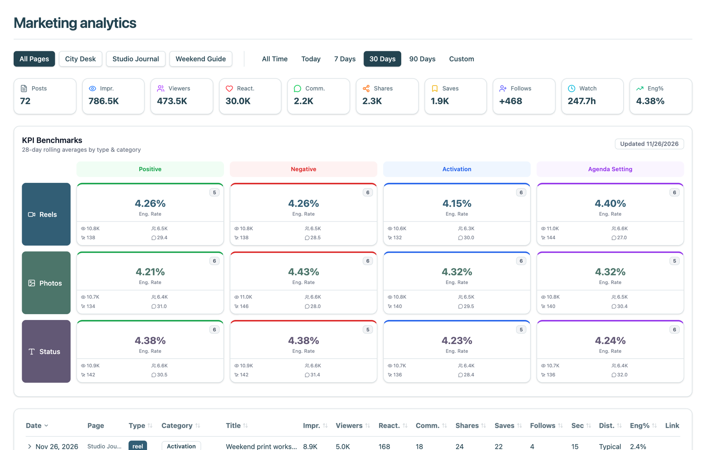
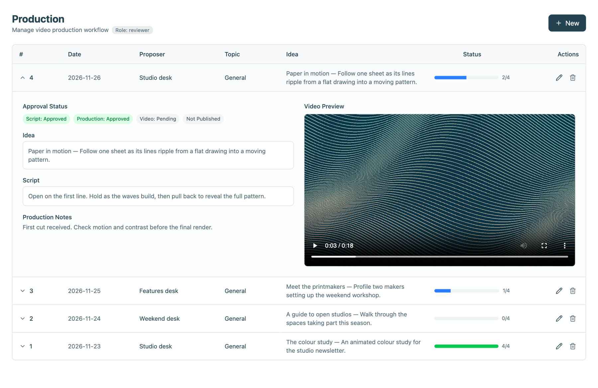
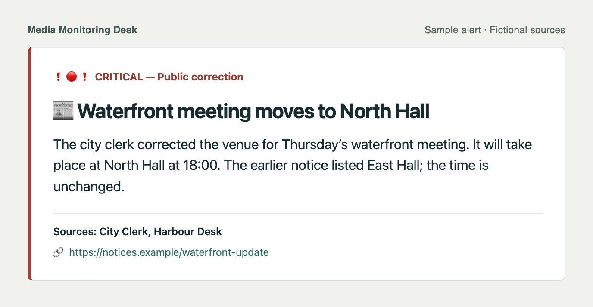
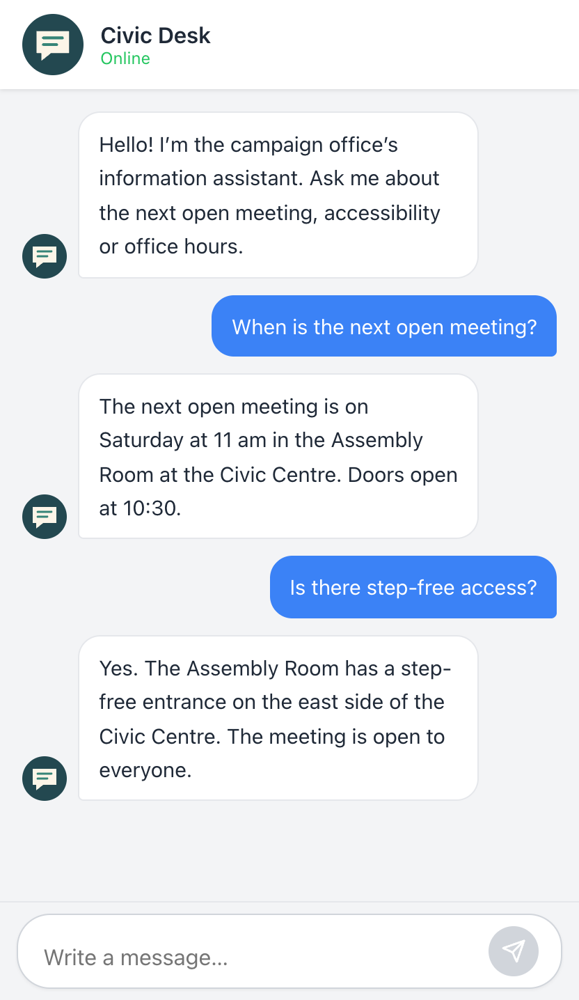
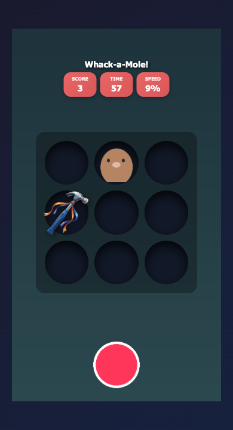
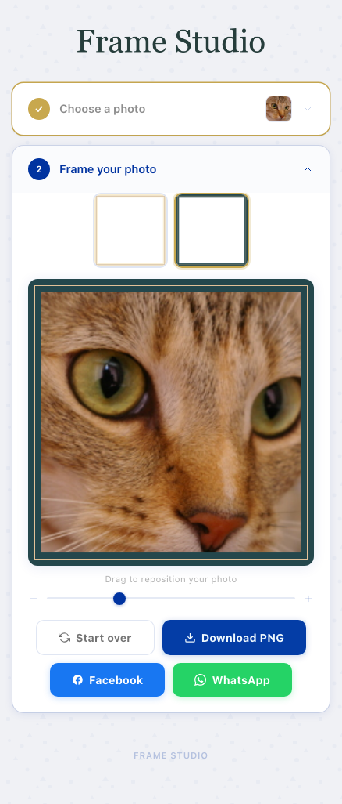

Software and documentation Marketing Analytics Dashboard Filter posts by page and date, compare reach and engagement, and read the comment analysis for an individual post.

Post performance by page, format and content type The demo contains 72 posts across three pages. Open “Weekend print workshop” to see what readers asked about materials, session times and the waiting list.
Production Desk Track a video from pitch to final cut. Each production keeps its script, review notes, approvals and footage together.

Production record with footage Open a production record to review its script and approval decisions alongside the footage.
Telegram Newsroom Publish a Telegram dispatch as a news bulletin that links readers back to the source message.
Newsroom homepage Open a bulletin and follow its source link to the Telegram dispatch it came from.
Field Survey Desk Volunteers record doorstep visits on their phones. Field managers can see which door was visited and what answer was recorded.
Volunteer survey form Follow one visit across two screens. The volunteer submits the survey, and the manager sees the response against the same address.
Media Monitoring Desk Group reports about the same event into one alert with source links for delivery to Telegram and WhatsApp.

Sample alert generated by the monitoring service Two newsrooms report a venue change. The resulting alert gives the updated meeting location and cites both reports.
Civic Desk Chatbot Answer visitor questions on the web, WhatsApp and Telegram. Each channel keeps its own conversation history for follow-up questions.

A follow-up question in the web chat A visitor asks when the next meeting takes place, then asks about step-free access. The chat answers both questions in the context of the same meeting.
Social Mini-games A 60-second tap game for phones. Each hit earns a point and makes the next target appear sooner.

A round in progress The screenshots follow a player from the start screen through a timed round to the final score.
Frame Studio Position a photo inside a frame and download the finished profile picture on the same device.

Selecting a frame and positioning the photo Compare the photo as positioned in the editor with the square image it exports.